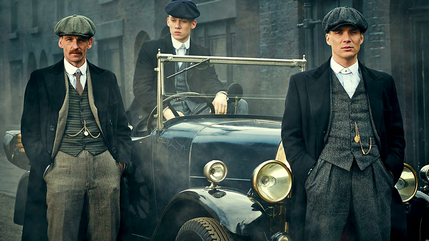

Temporadas

Temporada 1
En la primera temporada, conocemos a la familia Shelby y su ascenso al poder...

Temporada 2
La familia Shelby enfrenta nuevos desafíos...

Temporada 3
La familia se enfrenta a nuevos enemigos...